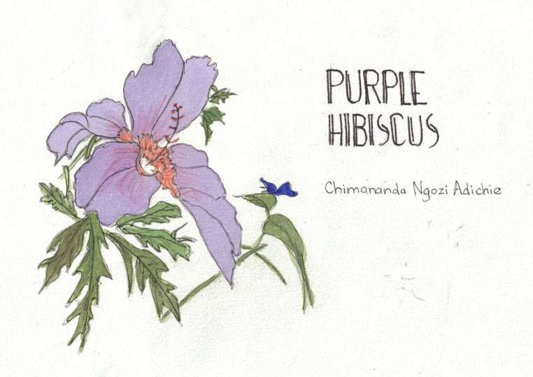

Name: Maba
Age: 17
Hobbies:Gardening
Aspirations :To travel the world
Favourite Book: Purple Hibiscus by: Chimamanda Ngozi Adichie
15 year old Kambili has been sheltered from all life's dangers by her strict, christian father. Although he is a respected man in their community, the dangers he seems to be protecting Kambili from do not lie on the streets of Nigeria but within their lavish home.
Her life is governed by the rules and schedules her father sets for her and her brother; Jaja but what happens when they have to move in with their aunt in Nsukka and they have to adapt to a totally different lifestyle? Now she will have to learn to see the lies behind her father's perfect exterior as well as she learning to live life fully without cowering away from all life's ups and downs.